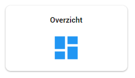
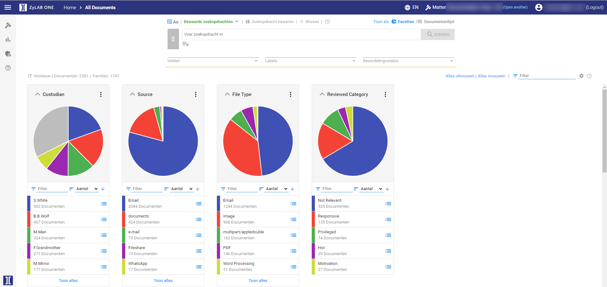
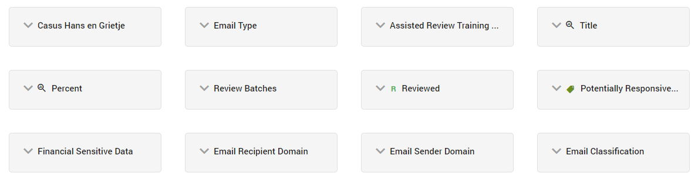
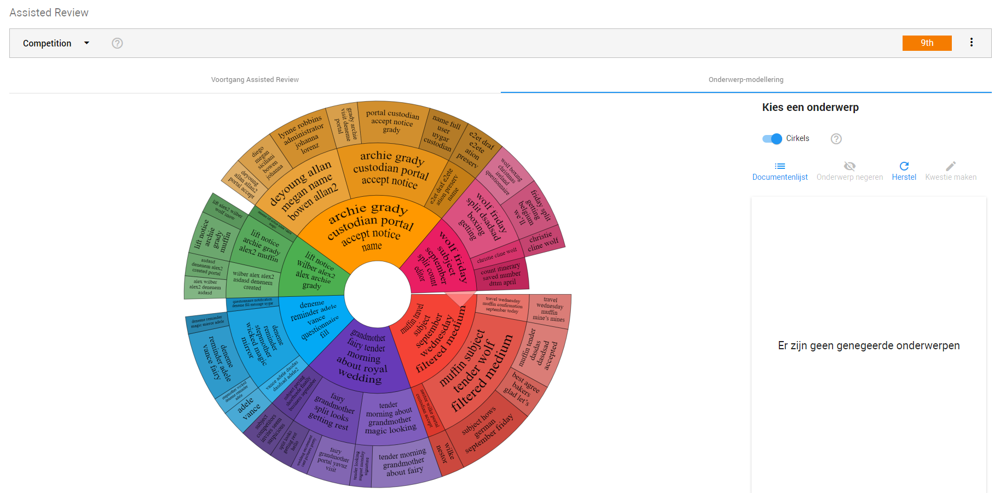

Door de verschillende functies van ZyLAB ONE kunt u goed bekijken welke onderwerpen en informatie nu eigenlijk in data sets zitten. Door middel van analyseren van de datasets kunt u een overzicht krijgen van wat zich precies bevindt in de datasets en hoe groot een bepaald onderwerp is. Functies die hier goed bij kunnen helpen zijn Dossier overzicht, Batch zoeken, Facetten en Topic Modeling.

Door middel van het dossier overzicht krijgt u een uitgebreid overzicht van de statistische informatie
die in het dossier naar voren komt. Hierbij wordt het dossier onderverdeeld in onderwerpen
zoals documenten, families, beheerders, bronnen, beoordeeld en niet beoordeeld.
Tevens wordt hier ook overzichtelijk weergegeven hoe vaak labels gebruikt zijn in het dossier.

In de tijdlijn wordt weergeven wanneer en hoeveel documenten er aan het dossier zijn toegevoegd.

Als laatste wordt er in het dossier overzicht een top 5 weergegeven.

Door het dossier overzicht kunt u makkelijk achterhalen wat zich precies afspeelt in de datasets, hoeveel documenten er zijn beoordeeld en welke nog niet.
Tevens kunt u door het dossier overzicht zien welke personen veel voorkomen en welke personen wellicht relevant zijn voor uw onderzoek.
Voor meer informatie kunt u naar Matter Overview (Engels) gaan.

De functie Batch Zoeken kunt u gebruiken om meerdere zoekopdrachten in een keer weer te geven. U kunt deze functie gebruiken om diagnose behandelcodes, legal privileged protected, medische en persoonsgegevens weer te geven.
Bijvoorbeeld: U als zorgaanbieder heeft een hele lijst met verschillende soorten diagnose behandelcodes, zorg behandelingen en medische gegevens. In plaats van elk onderwerp apart op te gaan zoeken biedt Batch Search de mogelijkheid om al deze zoekopdrachten te kopiëren en te plakken in ZyLAB ONE. Deze functie geeft ook makkelijk weer hoeveel documenten elke zoekopdracht oplevert en hoeveel documenten er in totaal gezocht moeten worden.
Deze functie kan helpen bij het bepalen hoeveel tijd er in het doorzoeken van de data gaat zitten. Hierdoor heeft u als zorgaanbiedern een duidelijk overzicht van hoelang het informatieverzoek, de inval en/of het intern onderzoek in beslag gaat nemen en hoeveel er te doorzoeken dient te worden.
Voor meer informatie over Batch Zoeken kunt u naar Batch Search gaan.

Facetten zijn cirkeldiagrammen die weergeven hoe bepaalde gegevens verdeeld zijn in het dossier. U kunt hierbij denken aan bijvoorbeeld review statussen, documentsoorten, bronnen etc. Door middel van het klikken op categorieën onder de cirkeldiagrammen kunt u de weergave specificeren om de gewenste selectie te weer te geven. Door de aangemaakte facetten is het voor u gemakkelijker om door de data heen te gaan.
Wanneer er veel facetten zijn, staan alle of een aantal ingeklapt. U kunt kiezen welke facetten u uitklapt door op het pijltje te klikken.

Voor meer informatie over facetten kunt u naar het topic Browse (Engels) gaan.
Onderwerp-modellering (Topic Modeling) is onderdeel
van Assisted Review.


Onderwerp-modellering maakt het mogelijk om een overzicht te creëren van de belangrijkste onderwerpen in de geüploade datasets. Op deze manier kunnen onderwerpen die voor uw onderzoek van belang zijn snel worden gevonden. Door middel van het klikken op de onderwerpen in de cirkel kunt u zien welk percentage dit bepaalde onderwerp beslaat in de geüploade data. Via deze functie kunt u vervolgens naar de lijst met documenten die onder dit onderwerp valt.
Voor meer informatie kunt u naar Topic Modeling gaan.